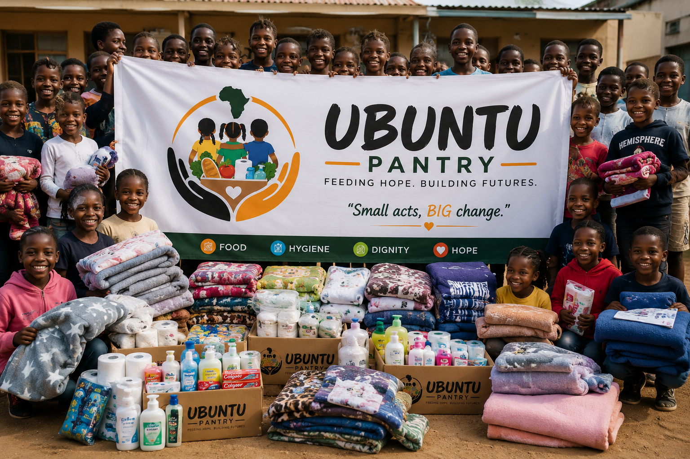

About:
Ubuntu Pantry is a community-focused non-profit organisation dedicated to supporting orphanages and vulnerable children by providing food, hygiene essentials and other basic necessities.
The organisation was founded by Mr Lifa Mashaba, who envisioned creating an organisation that would bring individuals, businesses and communities together to make a meaningful difference in the lives of children in need.
Ubuntu Pantry was founded on the belief that every child deserves access to food, proper hygiene and basic necessities, regardless of their circumstances. Through donations, partnerships, volunteers and community outreach programmes, the organisation aims to provide practical and consistent support to orphanages while promoting dignity, compassion and hope.
The name Ubuntu Pantry reflects the spirit of Ubuntu, which emphasises humanity, togetherness, compassion and the responsibility we have towards one another. As the organisation grows, Ubuntu Pantry plans to expand its reach beyond its current province and support more orphanages across South Africa, creating a wider network of communities working together to improve the lives of vulnerable children.
Mission
The mission of Ubuntu Pantry is to provide consistent access to food, hygiene essentials and other basic necessities to orphanages and vulnerable children while bringing communities together through compassion, generosity and collective action. We aim to identify the needs of orphanages and work closely with donors, volunteers, businesses and community members to provide meaningful and reliable support.
Our mission is not only about providing physical necessities, but also about reminding children that they are valued, cared for and supported by their community. Through our outreach programmes and partnerships, we strive to contribute towards improving the wellbeing, dignity and quality of life of children in need.
As we continue to grow, we are committed to extending our support to more orphanages in other provinces and building sustainable partnerships that will allow us to make a lasting difference.
Vision
Our vision is to build a future where every child living in an orphanage has access to nutritious food, essential hygiene products, basic necessities and the support of a caring community.
Ubuntu Pantry envisions a society where no child feels forgotten or neglected because of their circumstances and where communities come together to ensure that vulnerable children receive the care and support they deserve. We aim to grow from a community-based organisation into a broader movement of people, businesses and organisations committed to making a positive difference in the lives of children.
Through the expansion of our programmes into other provinces across South Africa, we hope to reach more orphanages, build stronger partnerships and create sustainable support systems that can positively impact children's lives for years to come. Ultimately, Ubuntu Pantry wants to inspire people to understand that even a small act of kindness can create hope, restore dignity and contribute towards building a better future.

Founder Mr Mashaba Lifa